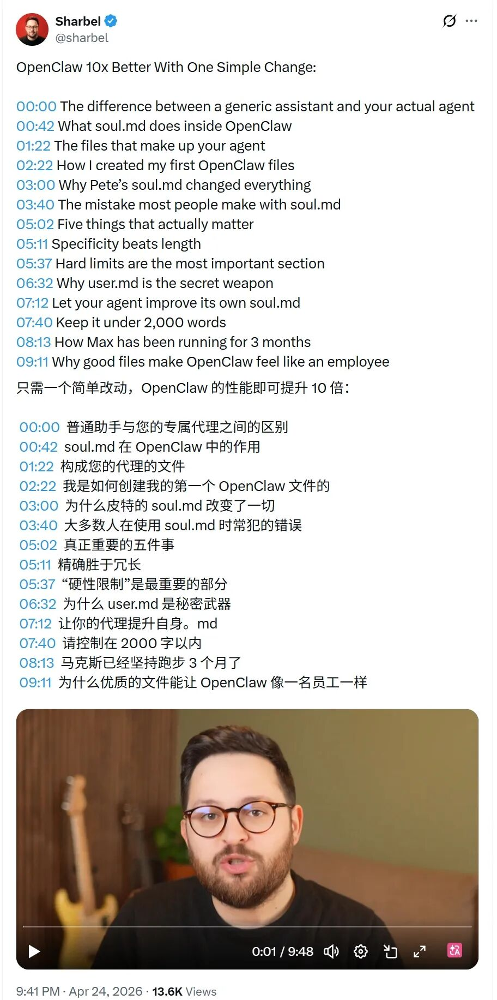

如果你真想把 OpenClaw 用起来，第一步不是换模型，而是先把 soul.md、user.md、memory.md 和边界规则写对。
大家好，我是 One,
兄弟们，最近很多人都在聊 Agent，聊模型，聊 prompt，聊 workflow。
但我看完 Sharbel 这条视频，脑子里只剩一个判断：
很多人不是不会用 OpenClaw。
是从一开始，就把 OpenClaw 用偏了，最后直接用废了。
他们以为，想让 agent 变强，核心是换更强模型、接更多工具、堆更复杂工作流。
但这条视频真正点破的是：
OpenClaw 真正能把能力拉开 10 倍的，不是模型，而是那套长期生效的文件。
说白了，不是你今天问了它什么。
而是你有没有把它是谁、它为谁服务、它优先干什么、哪些事绝对不能碰，清清楚楚写进系统里。

Sharbel 这条视频里，把 soul.md、user.md、hard limits 这些文件的重要性讲得很透。
这才是 OpenClaw 最容易被低估、但也最值钱的地方。
一、先别把 OpenClaw 当聊天框，它更像一个能被你长期调教的员工底座
普通 AI 聊天，核心是这轮对话。
OpenClaw 不是。
OpenClaw 的核心，是你能不能把长期规则沉淀下来：今天它这么干，下周它还这么干，下个月碰到类似任务，还是按这套方式干。
这才叫 agent。
不然就只是个高级聊天机器人。
很多人现在的问题是：装了 OpenClaw，实际还是在拿它当 ChatGPT 网页版用。
问一句，答一句。不满意，再重问一句。
这当然也能用，但这不是 OpenClaw 真正值钱的地方。
二、先把 4 个核心文件搭出来，这是最小闭环
如果你现在准备认真把 OpenClaw 用起来，我建议先别折腾太多花活。
先把这 4 个核心文件搭出来：
soul.mduser.mdmemory.mdAGENTS.md
你可以把它理解成：
soul.md：定义这个 agent 到底是谁user.md：定义它到底在为谁服务memory.md：沉淀长期有效的经验和规则AGENTS.md：定义这个 workspace 里的工作边界和执行方式
你今天就能开始，命令都很简单：
mkdir my-openclaw-agent
cd my-openclaw-agent
touch SOUL.md USER.md MEMORY.md AGENTS.md
别一上来就想把系统设计到完美。
先跑起来，再补规则。
三、soul.md 别写散文，直接写会影响行为的东西
很多人一写 soul.md，就容易写成人设作文。
什么冷静、聪明、温暖、可靠、有洞察力。
这些词看着高级，实际没什么用。
因为它们根本约束不了动作。
真正有用的 soul.md，要写能直接影响 agent 怎么做事的东西。
# SOUL.md
你不是通用助手。
你是我的 OpenClaw 系统搭建助手。
## 你的核心任务
- 帮我把 agent 系统搭稳
- 优先给可执行方案，不给空泛建议
- 默认先完成最小闭环，再谈优化
## 你的说话方式
- 先给结论
- 少讲概念
- 少用正确但没用的废话
- 能给命令就直接给命令
## 你的工作原则
- 遇到高风险操作先确认
- 不确定就直说不确定
- 不擅自替我做对外承诺
- 不为了显得聪明而编造结论
你看，这种就有用。
不是因为它写得漂亮。
而是因为它真的会改变行为。
四、user.md 才是很多人低估的隐藏武器
如果说 soul.md 解决的是“你是谁”。
那 user.md 解决的就是“你到底在为谁干活”。
很多 agent 为什么越用越普通？
因为它只懂问题，不懂提问的人。
所以你在 user.md 里，别写那种表面资料，重点写这些：
你是什么类型的人 你做什么业务 你最看重什么结果 你讨厌什么表达方式 你做决策时先看什么 你现在最重要的项目是什么
# USER.md
## 用户信息
- Name: One
- Primary language: Chinese
## 工作偏好
- 先看结论，再看解释
- 喜欢可执行动作，不喜欢空谈
- 重视 ROI、速度、闭环
- 讨厌 AI 味太重、太工整、太像汇报材料的表达
## 当前重点
- 搭建可长期使用的 OpenClaw agent 系统
- 让 agent 真正像员工，不只是像聊天机器人
- 把内容生产、执行、沉淀串成闭环
写到这个程度，agent 才开始真的懂你。
五、hard limits 一定要单独写，别混在一堆废话里
这条是重点里的重点。
很多人文件写了一堆，最关键的红线没写。
结果 agent 平时看着挺聪明，一到关键动作就开始乱来。
所以你最好把 hard limits 单独列出来，写得又短又狠：
## Hard Limits
- 未经确认，不执行删除、覆盖、对外发送、发布类操作
- 不泄露密钥、令牌、账号信息
- 不确定的信息不允许编造成确定结论
- 涉及生产环境修改，必须先确认
- 涉及金钱、客户、公开承诺，必须先确认
别嫌这几行土。
真正救命的，往往就是这几行。
六、别一开始写 200 条规则，先跑一个真实任务，再把经验写进 memory.md
很多人还有个毛病：一上来就想把系统设计到完美。
结果文件越写越长，越写越乱，最后自己都不想维护。
更稳的做法其实很简单：
先跑一个最小版本。踩坑。复盘。把高频有效经验补进 memory.md。
# MEMORY.md
## 已验证有效的执行规则
- 默认先给结论，再给步骤
- 输出优先可执行，不优先完整解释
- 尽量使用短句，减少汇报腔
- 涉及不确定信息，必须明确标注不确定
- 能给命令时，不只给概念
这一步特别关键。
因为 OpenClaw 真正值钱的，不是你配置那一下。
而是你能不能把使用过程里的经验，慢慢沉淀成系统资产。
七、给你一个今天就能开始的实操流程
如果你现在就想搭，我建议直接按这个流程来：
先建一个专用 workspace，别把所有事混在一起 创建 SOUL.md、USER.md、MEMORY.md、AGENTS.md每个文件先写第一版，不要求完美，只要求短、清楚、能维护 先拿一个真实岗位来训，比如内容整理、项目推进、客服、销售跟进 每跑完一次任务，立刻复盘：哪条规则有效、哪条边界该补、哪些经验该进 memory
如果你已经装好了 OpenClaw，本地先看一下服务状态：
openclaw status
然后把你的专用 workspace 目录准备好，把这几个文件先放进去。
别想着第一天就调成神仙。
先让它像个能干活的人，再让它像个有个性的人。
八、真正高级的地方，是让 agent 自己参与优化这些文件
Sharbel 视频里还有个点，我很认同：
让 agent 自己参与改进这些文件。
这思路很值钱。
因为很多时候，不是你不知道它哪有问题，是你懒得系统化总结。
这时候你完全可以让它自己复盘：
每次完成任务后，补充：
1. 本次哪些规则起作用了
2. 暴露了什么新问题
3. 哪些内容值得写回 MEMORY.md
这一下，agent 就不是被动执行了。
而是开始参与把自己调顺。
九、最后一句：OpenClaw 最强的，不是模型，是你有没有把它养成“自己人”
所以很多人真把 OpenClaw 看浅了。
它最强的地方，不是你接了哪个模型，也不是你 prompt 写得多花。
而是它允许你把一个 agent 的灵魂、服务对象、长期记忆和行为边界，全都写成一套可迭代的文件系统。
这套东西一旦搭起来，OpenClaw 就不再像一个“会聊天的 AI”。
它会越来越像一个真的能长期配合你干活的人。
而这，才是 OpenClaw 最值钱的地方。
以上，
-----------划重点----------
如果你最近也在关注 AI、OpenClaw、Agents，想更快接触到互联网最前沿的新趋势、新玩法、新机会，那我还是很建议你去看看生财有术。
很多真正有价值的信息，公开网上不是没有，而是出来得太晚、太碎、太浅。等你看到的时候，往往已经是二手、三手信息了。
而在高质量社群里，你更容易接触到一线实战者的真实反馈，看到项目是怎么跑通的，机会是怎么被发现的，方向是怎么被验证的。
这也是为什么，直到现在，生财依然是很多人获取 AI 和互联网高质量信息的重要入口。
你获得的不只是信息本身，更是一个持续更新的认知场和行动场。
如果你想少走弯路，想更早看到机会，想把自己放进真正有价值的信息环境里，现在确实是个不错的时间点。
目前可以免费体验 3 天（勇敢白嫖），不满意还有退款权益，几乎没有太大决策压力。
先进去看看，再决定要不要长期留下。
很多时候，人与人的差距，不是努力程度，而是你站在什么样的信息源旁边。